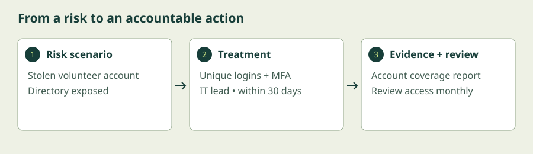

Foundations in Practice
Use a small organisation’s risks to set priorities, assign responsibility, collect evidence, and improve. Finish with a practical 90-day plan.
Begin the lesson ↓By the end, you can…
- Compare common frameworks, management standards, and assurance reports.
- Identify scope, assets, risks, owners, and evidence for a security programme.
- Prioritise controls and plan incident response and recovery.
- Create and review a realistic 90-day improvement plan.
Turn good intentions into a security programme.
1. Compliance and security answer related questions
Security asks whether risks are managed well enough for the organisation’s purpose. Compliance asks whether applicable requirements are met. Requirements may come from law, contracts, standards, or internal policy. Passing an assessment does not guarantee that incidents cannot happen; a control can exist on paper while failing in everyday use.
Start with scope: which services, people, locations, systems, and information does the programme cover? For our centre, include registration, the learner directory, payments, reminders, and backup arrangements. Record third-party responsibilities too. Outsourcing payments may reduce what the centre handles, but it does not automatically remove every obligation.
2. Know which kind of reference you are using
| Reference | What it is | How to use it |
|---|---|---|
| NIST CSF 2.0 | An outcome-oriented cybersecurity risk framework. | Organise work around Govern, Identify, Protect, Detect, Respond, and Recover. |
| ISO/IEC 27001:2022 | Requirements for an information security management system (ISMS). | Establish a scoped, risk-based management system with ongoing review; certification assesses a defined scope. |
| PCI DSS v4.0.1 | A payment-card data security standard. | Determine applicability and validation with the relevant payment stakeholders; examine card-data flows. |
| SOC 2 | An independent attestation report against relevant trust services criteria. | Review scope, period, exceptions, and the customer’s responsibilities when assessing a supplier. |
These are not interchangeable badges. A framework helps organise outcomes; a standard sets requirements; an assurance report describes an assessment. Legal duties vary by jurisdiction and activity, so record the requirements relevant to your actual organisation and confirm them with the responsible specialists. This lesson teaches the process, not a jurisdiction-specific legal conclusion.
NIST introduced Govern in CSF 2.0 alongside the other five functions. Governance makes decisions, accountability, and oversight explicit. The functions work together continuously rather than forming a one-time checklist.
3. Start with a small, owned risk register
A risk register records a plausible harmful scenario, the asset affected, likelihood and impact, existing controls, a responsible owner, and the next action. State risks as scenarios: “A stolen volunteer account exposes the learner directory.” Avoid vague entries such as “hackers” that do not support a decision.
A simple 1–3 likelihood and impact scale helps a small team compare risks. Multiplying them can provide a teaching score, but it is not a measured probability or a financial loss estimate. Explain your assumptions. A high-consequence event can deserve attention even when a rough score is lower than another risk.
Choose how to treat each risk: reduce it with controls, avoid the risky activity, transfer some consequences through contracts or insurance, or accept the remaining risk with an authorised decision. Transferring consequences does not remove the need to manage security. Record residual risk: the risk that remains after treatment.
4. Make controls observable
For each priority action, name an owner, deadline, and evidence. “Improve backups” is weak. “Operations will restore a sample registration backup to an isolated test environment by day 30 and record the result” is reviewable. Collect enough evidence to show the control worked, without copying unnecessary learner information into an audit folder.
Useful measures include the proportion of privileged accounts with MFA, overdue critical updates, and the time needed to restore service in a test. Numbers need context: zero reported incidents might mean quiet operations or ineffective detection. Review trends and failures, not just attractive totals.
5. Prepare for an incident before it happens
A response plan names who coordinates, how to contact them, who can authorise containment, how to preserve evidence, and how communication decisions are made. Practise with a tabletop exercise: a fictional situation discussed by the people who would respond. Include a fallback contact method if normal email is unavailable.
For suspected account compromise, the incident lead may coordinate disabling access, revoking sessions, and preserving relevant logs. For recovery, restore trusted systems, test integrity and functionality, and watch for repeat activity. Avoid automatically wiping devices or deleting logs, which can destroy evidence. Escalate actual notification obligations through the organisation’s established process.
A practical first 90 days can begin with inventory and named ownership, continue with the highest-priority controls, and finish with a restore test and incident exercise. Repeat the cycle: review changes, incidents, exceptions, and whether controls still match the work. A sustainable programme is a management habit, not a document written once.
Another way into the ideas
Choose the written lesson or combine these visual explanations with the guided exercise. The videos cover selected concepts; use the short written explanations to fill the remaining objectives.
Building a Cybersecurity Framework
IBM Technology
Watch for a visual introduction to the NIST framework. Use the comparison table and planning lab to cover standards, assurance, and the programme decisions.
Watch on YouTube if playback is blocked. Use YouTube’s captions where available; the written lesson provides a complete learning path.
Build the centre’s first 90-day plan
The centre has 10 staff, 20 volunteers, a cloud registration portal, and a payment provider. Volunteer passwords are reused; backups run nightly but have never been restored. Use these fictional facts to make an actionable plan.
Allow 20–30 minutes. Exercises reset when you reload or leave. They do not save progress or submit your entries.
- Choose a risk scenario. Rate likelihood and impact from 1 (low) to 3 (high), then explain your assumptions to a study partner or in your notes.
- Write a specific treatment with a role responsible for it, a deadline within 90 days, and evidence of completion. Use the fields below.
- Click Review plan. Improve any missing or incomplete fields. Compare with the worked solution; the checker verifies completeness, not compliance.
- Repeat for the other risk. Describe a response contact and a recovery test. Review both entries together: what should happen first and why? Copy your entries to your own notes before leaving the page.

Show the solution and troubleshooting
Account risk: likelihood 3, impact 3 is a defensible teaching estimate because passwords are reused and learner data is sensitive. Treatment: IT lead gives each volunteer a unique account, enables suitable MFA, and restricts record access within 30 days. Evidence: account inventory, MFA coverage, and the allowed/denied access tests from Module 2. Residual risk includes compromised devices and mistakes; the programme sponsor approves that risk and reviews it monthly.
Backup risk: likelihood 2, impact 3 is reasonable with no restore evidence. Operations lead restores a sample backup in an isolated environment within 14 days, checks record integrity, records time to recovery, and schedules repeat tests. A failed test is useful evidence that further treatment is needed.
For a suspected export, name the incident lead, preserve logs, revoke affected sessions through the authorised process, assess scope, and coordinate communication. Recovery should restore trusted operations and verify access rules. These are example decisions, not universal scores or proof of compliance.
If the checker reports missing fields, add the owner, treatment, and evidence; use a whole-number deadline from 1 to 90. It checks presence only. Ask a reviewer whether the action is feasible and the evidence actually demonstrates success.
Check your understanding
A provider shows a security certificate. What should you ask next?
Compare your answer
Ask what services and locations are in scope, whether the evidence is current, what exceptions exist, and which controls remain your responsibility.
What to take with you
- Determine scope and applicable requirements; compliance evidence and actual risk both matter.
- Use frameworks, standards, and assurance reports according to their purpose.
- Assign every priority risk an owner, treatment, deadline, and evidence.
- Practise response and recovery, review residual risk, and improve continuously.
You have completed the learning path. Apply it to one system you use: identify an asset, a plausible threat, a control, and a way to check it.
Keep exploring
- NIST · Cybersecurity Framework resources
- ISO · ISO/IEC 27001
- PCI SSC · Official document library
- AICPA & CIMA · SOC suite of services
Independent educational material. External videos and resources belong to their creators; inclusion does not imply endorsement. References checked 6 October 2026.